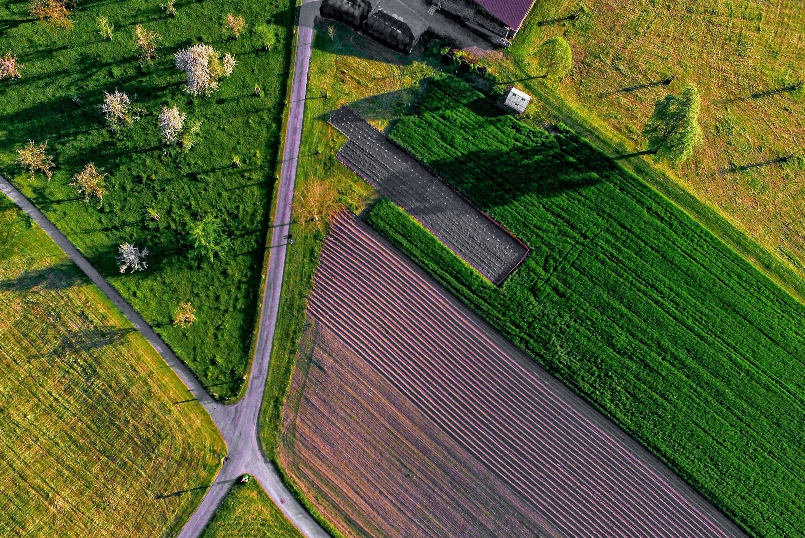

Covid-19 has significantly increased demand for Farmdrop deliveries. For this reason, we have had to make some changes to the way we operate online and at the point of delivery. This page explains how to place a Farmdrop order and is updated with the latest information so please check back regularly. All drivers are provided with gloves and plastic bags to allow contactless delivery. We also support customers receiving goods in bags or boxes they have provided, placed outside your doorstep. Customers are also welcome to remove items from the crates into bags if they would prefer. If you have any concerns about your delivery, please call our Customer Happiness team to discuss.
Farm Fresh not only offers you the freshest, healthiest and most delicious products you can wish for, but it also remunerates producers fairly. We believe producers should be remunerated correctly for all the hard work they put, but traditional Super Markets rarely do so. By buying our delicious products, you contribute to making the world a better place. And you do good while doing good to yourself, too. We won't lie, it's not always easy. We are still humbled by the support and patience of our customers and producers: we wouldn't be there without their trust. Care to join the adventure?
Every product containing meat, eggs or dairy is organic or free range, with animals allowed to express their natural instincts in a harmonious environment.
We always pay our local and fresh farmers a fair price for their produce so they can farm in the most sustainable way possible.
Our farmers follow sustainable and environmentally-sound farming techniques that preserve natural resources and help to enrich the soils for healthier animals and crops.

The majority of our fresh produce will be from farms within 100 Kilometers of your city because food produced closer to home tends to be fresher, more seasonal, and less carbon intensive. The slick supply chain developed by the Farm Fresh team means your food will be more than five times fresher than what you would get from the supermarket. We are most effective at helping local producers grow their businesses if customers can do their entire grocery shop on Farmdrop. For this reason, we supplement our local selection with some carefully chosen products from elsewhere.This situation is a win-win: customers have better options and full transparency into where their food comes from so they can make informed choices, and small independent producers reach those customers who otherwise might have turned to industrially-produced food.
Whether you fancy something quick and healthy or a special occasion feast, we'll show you how to make a dish you love. To make things easy, you can add all the ingredients straight to your basket. What are you waiting for? At Farm Fresh, we appreciate difference. Wheter you're vegeterian, vegan, flexiterian, or whether you are following a Keto or Paleo Diet, you will find all types of recipes that will satisfy your cravings. Our recipes are inspired by the seasons, ingredients we believe in, travels we’ve been on and meals we share with friends and family. We have taken flavours and ingredients from our memories and travels and combined them with herbalism and naturopathy to create a new alchemy, a new nutrition bursting with vital energy.